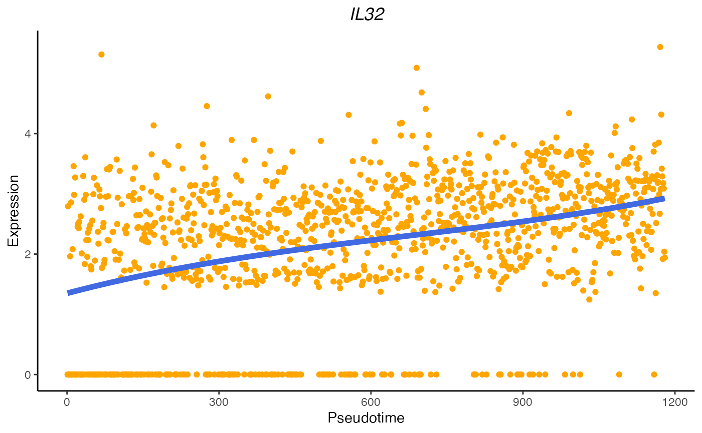

Model temporal gene expression patterns
Haotian Zhuang
September 23, 2025
Source:vignettes/PreTSA_temporal.Rmd
PreTSA_temporal.RmdIntroduction
We will demonstrate how to use PreTSA to fit the gene expression along pseudotime values and identify temporally variable genes (TVGs).
Install and load the package
if (!require("devtools"))
install.packages("devtools")
devtools::install_github("haotian-zhuang/PreTSA")Load and preprocess the dataset
The 3K peripheral blood mononuclear cells (PBMC3K) dataset was
downloaded from the 10x
website. The processed PBMC3K dataset was downloaded using the R
package SeuratData. TSCAN was used to
construct a pseudotime trajectory from naive CD4 T cells to memory CD4 T
cells with the top 10 principal components (PCs) and the cell clusters
obtained from the dataset. Genes that are expressed in fewer than 5
cells within the trajectory were filtered out. We analyzed a final set
of 10,509 genes on 1,180 cells.
suppressPackageStartupMessages(library(Seurat))
suppressPackageStartupMessages(library(SeuratData))
suppressPackageStartupMessages(library(TSCAN))
d <- LoadData("pbmc3k", type = "pbmc3k.final")
d <- UpdateSeuratObject(object = d)
dr <- Embeddings(d, reduction = "pca")[, 1:10]
clu <- Idents(d)
order <- guided_tscan(dr = dr, clu = clu, cluorder = c("Naive CD4 T", "Memory CD4 T"))
pseudotime <- setNames(1:length(order), order)
expr <- d@assays$RNA$data
expr <- expr[, names(pseudotime)]
expr <- expr[rowSums(expr > 0) >= 5, ]The processed dataset can be loaded directly from the package to save time.
load(system.file("extdata", "sc_pbmc3k", "preprocessed.Rdata", package = "PreTSA"))
str(expr)
#> Loading required package: Matrix
#> Formal class 'dgCMatrix' [package "Matrix"] with 6 slots
#> ..@ i : int [1:953387] 22 52 157 168 190 252 350 430 486 554 ...
#> ..@ p : int [1:1181] 0 238 508 958 1290 1691 2211 2596 2842 3257 ...
#> ..@ Dim : int [1:2] 10509 1180
#> ..@ Dimnames:List of 2
#> .. ..$ : chr [1:10509] "LINC00115" "NOC2L" "HES4" "ISG15" ...
#> .. ..$ : chr [1:1180] "CTAATAGAGCTATG" "TAGTCTTGGCTGTA" "ACTTGTACCTGTCC" "CACCCATGTTCTGT" ...
#> ..@ x : num [1:953387] 2.87 2.87 5.46 2.87 3.54 ...
#> ..@ factors : list()
str(pseudotime)
#> Named int [1:1180] 1 2 3 4 5 6 7 8 9 10 ...
#> - attr(*, "names")= chr [1:1180] "CTAATAGAGCTATG" "TAGTCTTGGCTGTA" "ACTTGTACCTGTCC" "CACCCATGTTCTGT" ...Fit the gene expression along pseudotime values
fitRes <- temporalFit(expr = expr, pseudotime = pseudotime)
str(fitRes)
#> num [1:10509, 1:1180] 0.00238 0.16975 0.00847 0.34266 -0.00666 ...
#> - attr(*, "dimnames")=List of 2
#> ..$ : chr [1:10509] "LINC00115" "NOC2L" "HES4" "ISG15" ...
#> ..$ : chr [1:1180] "CTAATAGAGCTATG" "TAGTCTTGGCTGTA" "ACTTGTACCTGTCC" "CACCCATGTTCTGT" ...The argument “knot” indicates the number of knots (0 by default) or automatic selection (“auto”). The argument “maxknotallowed” is the user-defined maximum number of knots (10 by default).
temporalFit(expr = expr, pseudotime = pseudotime, knot = "auto", maxknotallowed = 10)Identify temporally variable genes (TVGs)
It returns a data frame with the p-value, FDR, test statistic and number of knots selected for each gene. Genes are ordered first by p-value (increasing) then by test statistic (decreasing).
testRes <- temporalTest(expr = expr, pseudotime = pseudotime)
head(testRes)
#> fdr logpval pval fstat knotnum
#> S100A4 5.688841e-65 -157.18951 5.413304e-69 122.40125 0
#> MALAT1 7.139455e-58 -140.15114 1.358732e-61 107.66759 0
#> ANXA1 7.436749e-42 -102.86352 2.122966e-45 76.85722 0
#> B2M 7.478154e-41 -100.26770 2.846381e-44 74.78293 0
#> S100A11 2.473416e-37 -91.94060 1.176808e-40 68.18884 0
#> VIM 1.639914e-35 -87.56406 9.362909e-39 64.75939 0To account for the pseudotime uncertainty, we apply the strategy used
in PseudotimeDE, by subsampling 80% of cells and using the
same procedure as in pseudotime inference on the original dataset.
set.seed(2025)
n.permute <- 100
pseudotime_list <- lapply(1:n.permute, function(i) {
cell.subsample <- sample(colnames(d), 0.8 * ncol(d), replace = FALSE)
d.subsample <- subset(d, cells = cell.subsample)
d.subsample <- RunPCA(d.subsample, npcs = 10, verbose = FALSE)
dr <- Embeddings(d.subsample, reduction = "pca")[, 1:10]
clu <- Idents(d.subsample)
order <- guided_tscan(dr = dr, clu = clu, cluorder = c("Naive CD4 T", "Memory CD4 T"))
pseudotime <- setNames(1:length(order), order)
pseudotime
})
pseudotime_permute <- lapply(pseudotime_list, function(i) {
names(i) <- sample(names(i), replace = FALSE)
i
})The argument “pseudotime_permute” is a list of permuted pseudotime values from subsampled cells. Each element in the list has the same format of the argument “pseudotime”.
testRes <- temporalTest(expr = expr[1:100, ], pseudotime = pseudotime, pseudotime_permute = pseudotime_permute)
head(testRes)
#> fdr pval fdr.empirical pval.empirical fstat.ori
#> ISG15 4.918362e-19 4.918362e-21 0.07616146 0.00990099 28.32494
#> TNFRSF4 1.793487e-13 3.586973e-15 0.07616146 0.00990099 26.34783
#> ENO1 1.948602e-10 5.845806e-12 0.07616146 0.00990099 18.76528
#> RPL22 4.892355e-09 1.956942e-10 0.07616146 0.00990099 14.92563
#> TNFRSF25 2.782179e-08 1.391089e-09 0.07616146 0.00990099 14.02817
#> RER1 4.439416e-07 2.834004e-08 0.07616146 0.00990099 14.15083Use binning strategy for large datasets
To mitigate memory demands in generating the full gene expression matrix for extremely large datasets, PreTSA can divide the genes into multiple bins (10 by default) and then combine the fitted gene expression matrices obtained from each bin.
fitRes <- temporalFit_bin(expr = expr, pseudotime = pseudotime, numbin = 10)
#> [1] 1
#> [1] 2
#> [1] 3
#> [1] 4
#> [1] 5
#> [1] 6
#> [1] 7
#> [1] 8
#> [1] 9
#> [1] 10
str(fitRes)
#> num [1:10509, 1:1180] 0.00238 0.16975 0.00847 0.34266 -0.00666 ...
#> - attr(*, "dimnames")=List of 2
#> ..$ : chr [1:10509] "LINC00115" "NOC2L" "HES4" "ISG15" ...
#> ..$ : chr [1:1180] "CTAATAGAGCTATG" "TAGTCTTGGCTGTA" "ACTTGTACCTGTCC" "CACCCATGTTCTGT" ...
testRes <- temporalTest_bin(expr = expr, pseudotime = pseudotime, numbin = 10)
#> [1] 1
#> [1] 2
#> [1] 3
#> [1] 4
#> [1] 5
#> [1] 6
#> [1] 7
#> [1] 8
#> [1] 9
#> [1] 10
head(testRes)
#> fdr logpval pval fstat knotnum
#> S100A4 5.688841e-65 -157.18951 5.413304e-69 122.40125 0
#> MALAT1 7.139455e-58 -140.15114 1.358732e-61 107.66759 0
#> ANXA1 7.436749e-42 -102.86352 2.122966e-45 76.85722 0
#> B2M 7.478154e-41 -100.26770 2.846381e-44 74.78293 0
#> S100A11 2.473416e-37 -91.94060 1.176808e-40 68.18884 0
#> VIM 1.639914e-35 -87.56406 9.362909e-39 64.75939 0Visualize the fitted expression
As an example, IL32 is an known gene associated to T cell activation process. The fitted PreTSA curve shows an increasing trend.
suppressPackageStartupMessages(library(ggplot2))
genename <- "IL32"
df.gene = data.frame(ptime = pseudotime, ori = expr[genename, ], pretsa = fitRes[genename, ])
ggplot(data = df.gene) + geom_point(aes(x = ptime, y = ori), color = "orange") +
geom_line(aes(x = ptime, y = pretsa), linewidth = 2, color = "royalblue") +
labs(x = "Pseudotime", y = "Expression", title = genename) + theme_classic() +
theme(plot.title = element_text(hjust = 0.5, face = "italic"))
Session Info
sessionInfo()
#> R version 4.4.1 (2024-06-14)
#> Platform: aarch64-apple-darwin20
#> Running under: macOS 15.6.1
#>
#> Matrix products: default
#> BLAS: /Library/Frameworks/R.framework/Versions/4.4-arm64/Resources/lib/libRblas.0.dylib
#> LAPACK: /Library/Frameworks/R.framework/Versions/4.4-arm64/Resources/lib/libRlapack.dylib; LAPACK version 3.12.0
#>
#> locale:
#> [1] en_US.UTF-8/en_US.UTF-8/en_US.UTF-8/C/en_US.UTF-8/en_US.UTF-8
#>
#> time zone: America/New_York
#> tzcode source: internal
#>
#> attached base packages:
#> [1] stats graphics grDevices utils datasets methods base
#>
#> other attached packages:
#> [1] ggplot2_3.5.1 Matrix_1.7-0 PreTSA_1.1
#>
#> loaded via a namespace (and not attached):
#> [1] gtable_0.3.5 jsonlite_1.8.8 highr_0.11 dplyr_1.1.4
#> [5] compiler_4.4.1 tidyselect_1.2.1 jquerylib_0.1.4 splines_4.4.1
#> [9] systemfonts_1.1.0 scales_1.3.0 textshaping_0.4.0 yaml_2.3.10
#> [13] fastmap_1.2.0 lattice_0.22-6 R6_2.5.1 labeling_0.4.3
#> [17] generics_0.1.3 knitr_1.48 htmlwidgets_1.6.4 MASS_7.3-60.2
#> [21] tibble_3.2.1 desc_1.4.3 munsell_0.5.1 bslib_0.8.0
#> [25] pillar_1.9.0 rlang_1.1.4 utf8_1.2.4 cachem_1.1.0
#> [29] xfun_0.47 fs_1.6.4 sass_0.4.9 cli_3.6.3
#> [33] withr_3.0.1 pkgdown_2.1.0 magrittr_2.0.3 fitdistrplus_1.2-1
#> [37] digest_0.6.37 grid_4.4.1 rstudioapi_0.16.0 lifecycle_1.0.4
#> [41] vctrs_0.6.5 evaluate_0.24.0 glue_1.7.0 farver_2.1.2
#> [45] ragg_1.3.2 survival_3.6-4 fansi_1.0.6 colorspace_2.1-1
#> [49] rmarkdown_2.28 pkgconfig_2.0.3 matrixStats_1.3.0 tools_4.4.1
#> [53] htmltools_0.5.8.1